07-共享存储服务NFS
红帽nfs官方文档
https://access.redhat.com/documentation/zh-cn/red_hat_enterprise_linux/8/html/managing_file_systems/nfs-and-rpcbind_exporting-nfs-shares
已知samba主要用于linux与windows之间共享文件夹
那用于Linux之间进行文件共享则是用NFS服务（Network FileSystem）
目的在于让不同的机器，不同的操作系统可以彼此分享各自的文件数据。
NFS服务可以将远程Linux系统上的文件共享资源挂载到本地机器的目录上。
NFS很像Windows系统的网络共享、安全功能、网络驱动器映射，这也和Linux系统的samba服务类似。
一般情况下，Windows网络共享服务或samba服务用语办公局域网共享，而中小型网站集群架构后端通常用NFS数据共享，如果大型网络集群，还会用更复杂的文件系统，如GlusterFS、FastDFS等。
NFS系统已有30年发展历史，代表了一个稳定的网络文件系统，具备可扩展，高性能等特点。
由于网络速度的加快和延迟的减少，NFS系统一直是通过网络提供文件系统的不错的选择，特别是在中小型互联网企业用的广泛。
NFS在企业的应用架构
在企业集群架构的工作场景中，NFS网络文件系统一般被用来存储共享视频、图片、静态文件，通常网站用户上传的文件也都会放在NFS共享里，例如BBS产品(论坛)产生的图片、附件、头像等，然后前端所有的节点访问静态资源时都会读取NFS存储上的资源。
阿里云等公有云平台的NAS就是云版的NFS服务应用。
像这个奔驰官网，需要展示大量的图片，动态图，html网页文件，这些都是存储在服务器上的。
企业生产集群为什么需要共享存储
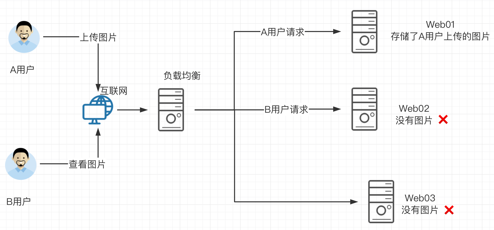
先看一下如果没有共享存储的问题
A用户上传图片到web01服务器，然后用户B访该图片，结果B的请求被负载均衡分发到了Web02，但是由于没有配置共享存储，web02没有该图片，导致用户B看不到该资源，用户心理很不爽呀。
那么如果配置了共享存储，无论A用户上传的图片是发给了web01还是其他，最终都会存储到共享存储上，用户B再访问该图片的时候，无论请求被负载均衡发给了web01、web02、web03最终都会去共享存储上寻找资源，这样也就能够访问到资源了。
这个共享存储对于中小企业，也就是使用服务器配置NFS网络文件共享系统实现。
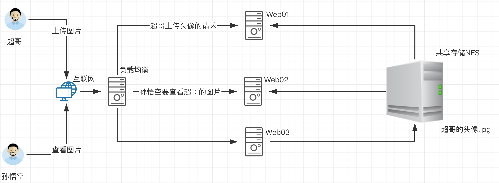
学习NFS的任务背景
问题来了，如何部署这个NFS网络文件系统呢？
我们来部署如下的操作
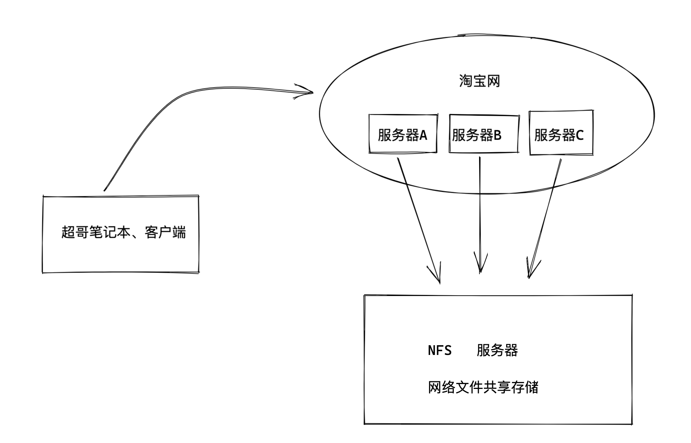
1.部署一台淘宝网服务器，网页服务器，提供静态网页的展示，该网站的html等静态资源远程存储在NFS服务器。
任务分析
1.淘宝网使用的nginx技术（web服务器部署技术）
2.部署NFS服务器，创建共享文件夹（提供静态文件），发布该共享目录，提供给web服务器使用。
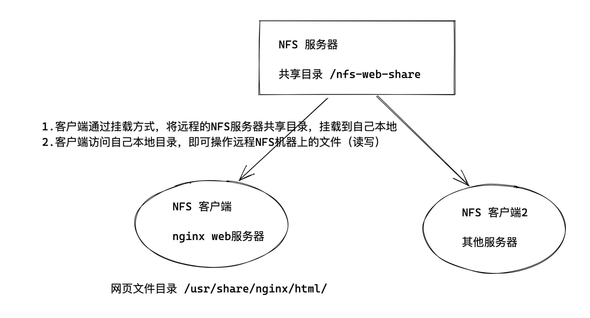
最终效果
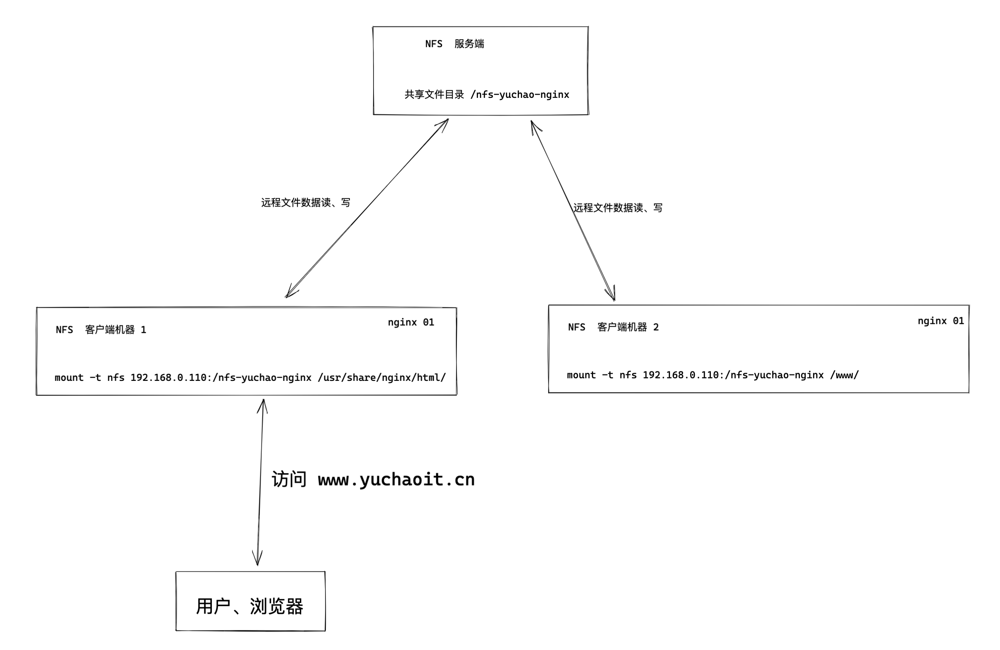
什么是共享存储
简单说就是将很多台服务器的数据，都可以保存在同一个存储服务器上。
这样可以在服务器集群内，数据统一存储到一台机器上，以实现共享存储。
这样在基于负载均衡的web集群下，用户无论请求哪一台机器都可以获取到同样的数据。
什么是NFS
network file system 网络文件系统
NFS主要使用在局域网下，让不同的主机之间可以共享文件、或者目录数据
主要用于linux系统上实现文件共享的一种协议，其客户端主要是Linux
没有用户认证机制，且数据在网络上传送的时候是明文传送，一般只能在局域网中使用
支持多节点同时挂载及并发写入
NFS使用场景

1.在服务器集群下，多台web服务器的图片、HTML、视频等静态资源，全都统一保存在NFS服务器上
2.以及NFS服务器也可以当做备份服务器
NFS架构图
NFS程序运行后，产生如下组件
- RPC（Remote Procedure Call Protocol）： 远程过程调用协议，它是一种通过网络从远程计算机程序上请求服务，不需要了解底层网络技术的协议。 -
- rpcbind //负责NFS的数据传输，远程过程调用 tcp/udp协议 端口111
- nfs-utils //控制共享哪些文件,权限管理
什么是RPC
RPC（Remote Procedure Call）远程过程调用，它是一种通过网络从远程计算机程序上请求服务，而不需要了解底层网络技术的协议。
下面举个简单的例子来理解 RPC。
远程过程调用，相对应的就是，本地过程调用。
rpc一般是开发中的网络编程知识
1.于超老师本地写好了一个代码文件，如hello-world.py ，本地运行该程序，这就是本地过程调用（执行程序，拿到结果）
2.远程过程调用
于超老师在将代码文件放在远程服务器上，在自己笔记本上，远程调用、执行该代码文件，执行结果会通过网络把数据发回来，这就是远程过程调用
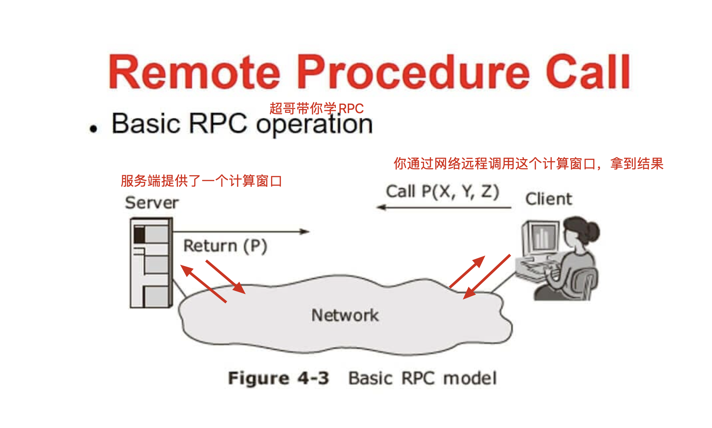
简单理解RPC与洗衣服
同样是洗衣服，一个本地洗，一个远程洗。
- 打个比方，你在家里，要洗衣服，你直接把衣服放到洗衣机，开启洗衣机开关，这就是本地过程调用。（本地过程调用）
- 远程调用就是，你不在家里，你打个电话回家里，跟妈说帮忙洗个衣服，这就是远程过程调用。
- 也就是你的一个计算任务，是远程的服务器在执行，执行完毕，告诉你结果而已。
NFS和RPC的关系
我们已知NFS是通过网络来进行数据传输（网络文件系统），因此NFS会使用一些port来传输数据。
关键点：
但是NFS在传输数据的时，使用的端口是随机选择（可以重启NFS服务查看端口）。
既然NFS是随机端口选择（好比银行的取钱窗口总发生变化，你知道几号窗口是取钱业务吗？）
那么NFS在传输数据的时候，怎么知道NFS服务器使用的端口是哪个呢？
答案就是NFS使用的RPC（Remote Procedure Call，就是远程过程调用）协议来实现的。
NFS工作原理（重要）
1.NFS服务端启动后、将自己的端口信息，注册到rpcbind服务中
2.NFS客户端通过TCP/IP的方式，连接到NFS服务端提供的rpcbind服务，并且从该服务中获取具体的端口信息
3.NFS客户端拿到具体端口信息后，将自己需要执行的函数，通过网络发给NFS服务端对应的端口
4.NFS服务端接收到请求后，通过rpc.nfsd进程判断该客户端是否有权限连接
5.NFS服务端的rpc.mount进程判断客户端是否有对应的操作权限
6.最终NFS服务端会将客户端请求的函数，识别为本地可以执行的命令，传递给内核、最终内核驱动硬件
结论、nfs的客户端、服务端之间的通信基于rpc协议，且必须运行rpcbind服务
rpcbind服务的作用
nfs的数据传输是通过rpc协议的。
NFS服务就是使用RPC协议的帮忙，RPC服务实现的功能是记录每个NFS功能对应的端口号，并且在NFS客户端发出请求的时候，把该功能和对应的端口信息传递给发出请求的NFS客户端，保证客户端能够正确的连接到NFS的端口，达到数据传输的目的。
RPC就好比是一个中介，处在客户端、服务端之间。
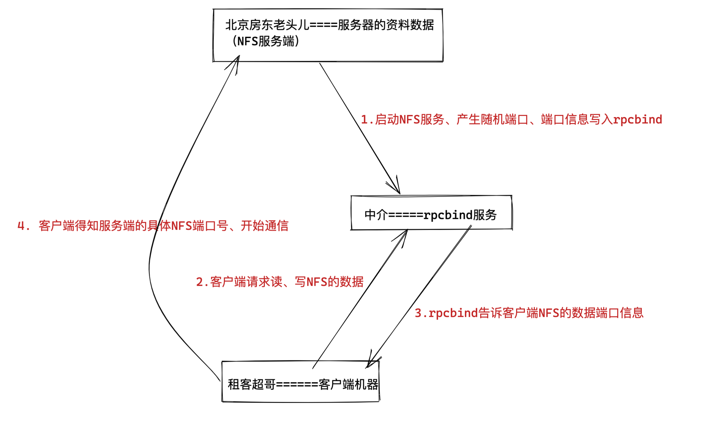
简单理解rpcbind服务
这就好比于超老师要租房，此时超哥就是一个NFS客户端
中介来介绍房子信息，中介就好比RPC服务
房源拥有者也就相当于NFS服务端，提供数据的，中介手里必须得先储备好房东的信息，才能给房源信息转达给租客。
那么RPC服务又是如何知道每个NFS的端口呢？（中介如何知道房东的具体信息呢？）
当NFS服务器启动时会随机采用若干端口，并且主动在RPC服务中注册相关端口以及功能信息。
如此一来RPC服务就知道NFS服务对应的端口功能了，RPC服务默认使用固定111端口来监听NFS客户端提交的请求，并将正确的NFS端口信息回复给NFS客户端
这样，NFS客户端就可以和NFS服务器进行数据通信了。
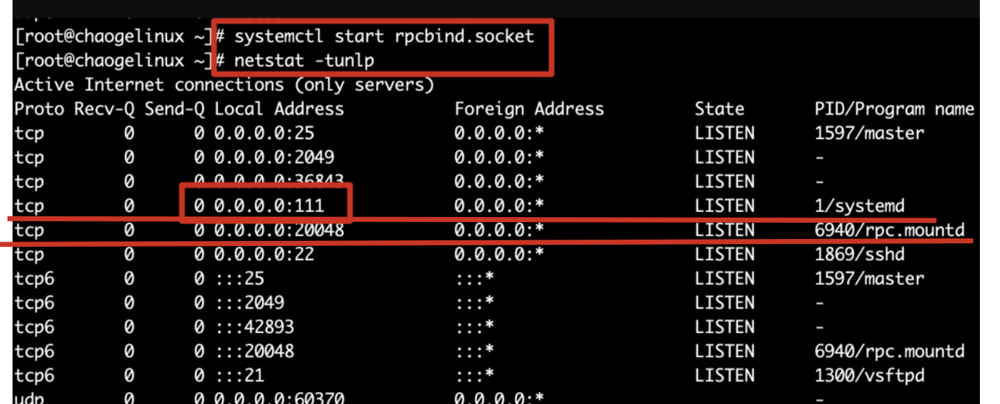
NFS工作流程（原理）
在启动NFS服务端之前，必须先启动RPC服务，在centos7服务器下为rpcbind服务，否则NFSserver无法向RPC注册信息了。
另外如果RPC服务重启，原来注册的NFS服务端信息也就失效了，也必须重启服务，再次注册信息给RPC服务。
特别要注意的是，修改NFS配置文件后不需要重启NFS，只需要执行exportfs -rv 命令即可或是systemctl reload nfs
图解NFS工作原理
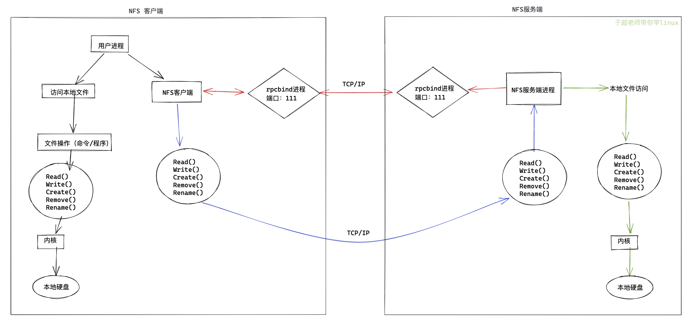
当访问程序通过NFS客户端向NFS服务器端存储文件时，其数据请求流程如下：
1.用户访问网站程序，由程序在NFS客户端上发出存取文件的请求，此时NFS客户端（执行程序的机器）的RPC服务（rpcbind）就会通过网络向NFS服务器的RPC服务的111端口发出NFS文件存取功能的请求。
2.NFS服务器RPC找到对应注册的NFS端口，通知NFS客户端RPC服务
3.此时NFS客户端获取到正确的端口，并与NFS daemon联机存取数据
4.NFS客户端把数据存取成功后返回给前端程序，告知用户存取结果，完成一次存取请求。
这也就证明，必须先启动RPC服务，再启动NFS服务的步骤。
NFS服务端配置文件理解
学习任何技术都是
1、先学技术点原理、架构流程
2、实践操作
3、部署过程如果出错，回顾原理，分析错误点。
NFS软件列表
安装nfs服务，需要安装如下软件包
- nfs-utils：NFS服务的主程序，包括了rpc.nfsd、rpc.mountd这两个守护进程以及相关文档，命令
- rpcbind：是centos7/6环境下的RPC程序
[root@yuchao-server01 ~]# rpm -qa nfs-utils rpcbind
nfs-utils-1.3.0-0.54.el7.x86_64
rpcbind-0.2.0-44.el7.x86_64
2.如果没有，需要安装nfs和rpc软件。
[root@yuchao-server01 ~]# yum install nfs-utils rpcbind -y
环境配置
NFS也是C/S模式，准备NFS服务端，多个NFS客户端、多台linux机器。
配置文件修改
语法
默认配置文件路径是/etc/exports
exports配置文件语法
NFS共享目录 NFS客户端地址(参数1、参数2...) 客户点地址2（参数1、参数2...）
例如
/ hostname1(rw) hostname2(rw,no_root_squash)
/pub *(rw)
/home/chao 123.206.16.61(ro)
参数解释
1.NFS共享目录：为NFS服务器要共享的实际目录，必须绝对路径，注意目录的本地权限，如果要读写共享，要让本地目录可以被NFS客户端的(nfsnobody)读写
2.NFS客户端地址，也就是NFS服务器端授权可以访问共享目录的客户端地址，详见下表
3.权限参数，对授权的NFS客户端访问权限设置，见下表
nfs客户端地址说明
| 客户端地址 | 具体地址 | 说明 |
|---|---|---|
| 单一客户端 | 192.168.178.142 | 用的少 |
| 整个网段 | 192.168.178.0/24 | 24表示子网掩码255.255.255.0，指定网段，用的较多 |
| 授权域名客户端 | nfs.yuchaoit.cn | 弃用 |
| 授权整个域名客户端 | *.yuchaoit.cn | 弃用 |
示例
/home/chaoge/log 192.168.178.0/24(ro)
只读共享，例如一些生成服务器的日志目录，又不想给开发服务器的权限，可以用此办法，共享目录给他人只读查看
#修改nfs配置文件为如下示例
[root@chaogelinux nfsShare]# cat /etc/exports
/nfsShare *(insecure,rw,sync,root_squash)
#表示共享该文件夹，且提供给所有网段的机器可访问
配置规则是，可读写，数据同步写入到磁盘，把root管理员映射为本地的匿名用户，insecure是客户端从大于1024的端口发送链接
配置文件参考
配置文件格式:
/nfs-yuchao-nginx 172.16.1.0/24(rw,sync,all_squash,anonuid=1000,anongid=1000)
共享目录 允许客户端访问的IP (挂载参数、NFS共享参数)
注意，限制访问的网段和(挂载参数)之间没有空格
NFS配置文件参数解释
ro 只读
rw 读写
root_squash 当nfs客户端以root访问时，它的权限映射为NFS服务端的匿名用户，它的用户ID/GID会变成nfsnobody
no_root_squash 同上，但映射客户端的root为服务器的root，不安全，避免使用
all_squash 所有nfs客户端用户映射为匿名用户，生产常用参数，降低用户权限，增大安全性。
sync 数据同步写入到内存与硬盘，优点数据安全，缺点性能较差
async 数据写入到内存，再写入硬盘，效率高，但可能内存数据会丢
/etc/exports man 5 exports
共享目录 共享选项
/nfs/share *(ro,sync)
共享主机：
* ：代表所有主机
192.168.0.0/24：代表共享给某个网段
192.168.0.0/24(rw) 192.168.1.0/24(ro) :代表共享给不同网段
192.168.0.254：共享给某个IP
*.yuchaoit.cn:代表共享给某个域下的所有主机
共享选项：
ro：只读，不常用
rw：读写
sync：实时同步，直接写入磁盘
async：异步，先缓存在内存再同步磁盘
anonuid：设置访问nfs服务的用户的uid，uid需要在/etc/passwd中存在
anongid：设置访问nfs服务的用户的gid
root_squash ：默认选项 root用户创建的文件的属主和属组都变成nfsnobody,其他人nfs-server端是它自己，client端是nobody。
no_root_squash：root用户创建的文件属主和属组还是root，其他人server端是它自己uid，client端是nobody。
all_squash： 不管是root还是其他普通用户创建的文件的属主和属组都是nfsnobody
说明：
anonuid和anongid参数和all_squash一起使用。
all_squash表示不管是root还是其他普通用户从客户端所创建的文件在服务器端的拥有者和所属组都是nfsnobody；服务端为了对文件做相应管理，可以设置anonuid和anongid进而指定文件的拥有者和所属组
rpcbind服务管理
NFS服务都是基于RPC协议通信的默认端口是111，要确保系统运行了rpcbind服务
要注意的是rpcbind服务即使停止，111端口也不会挂掉，因为还有rpcbind.socket服务
意思是，启动rpc服务由2个结合运行
rpcbind.service
rpcbind.socket
[root@chaogelinux ~]# systemctl status rpcbind
● rpcbind.socket - RPCbind Server Activation Socket
Loaded: loaded (/usr/lib/systemd/system/rpcbind.socket; enabled; vendor preset: enabled)
Active: active (running) since 二 2020-03-10 10:59:12 CST; 4h 35min ago
Listen: /var/run/rpcbind.sock (Stream)
0.0.0.0:111 (Stream)
0.0.0.0:111 (Datagram)
3月 10 10:59:12 chaogelinux systemd[1]: Listening on RPCbind Server Activation Socket.
# 启动rpcbind服务
systemctl restart rpcbind
#启动
systemctl restart nfs-server
NFS服务端部署实践（重要）
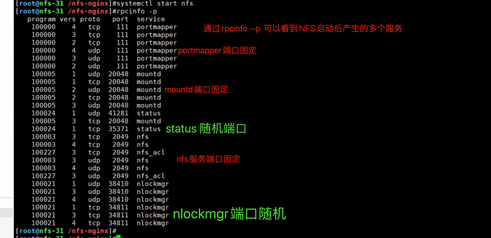
1.安装软件
[root@nfs-31 ~]#yum install nfs-utils rpcbind -y
2.启动、检查rpcbind进程
[root@nfs-31 ~]#netstat -tunlp |grep rpc
[root@nfs-31 ~]#systemctl status rpcbind
[root@nfs-31 ~]#systemctl start rpcbind
[root@nfs-31 ~]#netstat -tunlp |grep rpc
3. 创建nfs配置文件
all_squash： 不管是root还是其他普通用户创建的文件的属主和属组都是nfsnobody
rw 允许读写
sync 数据同步到磁盘
cat > /etc/exports <<EOF
/nfs-yuchao-nginx 172.16.1.0/24(rw,sync,all_squash)
EOF
4.创建NFS共享文件夹（设置权限，给nfs默认的匿名用户，降低权限，保护系统安全）
[root@nfs-31 ~]#mkdir -p /nfs-yuchao-nginx
[root@nfs-31 ~]#chown -R nfsnobody.nfsnobody /nfs-yuchao-nginx/
5.启动NFS服务
systemctl start nfs
6.检查nfs服务状态、以及端口、以及进程信息
[root@nfs-31 ~]#systemctl status nfs
[root@nfs-31 ~]#netstat -tnlp|grep rpc
[root@nfs-31 ~]#ps -ef|grep nfs
7.检查nfs服务端的共享情况，使用showmount命令查看
[root@nfs-31 ~]#showmount -e 172.16.1.31
Export list for 172.16.1.31:
/nfs-yuchao-nginx 172.16.1.0/24
8.查看nfs服务端远程共享的所有参数，是系统自动生成的，以及我们配置文件里定义的，都是默认的不需要了解太多
[root@nfs-31 ~]#cat /var/lib/nfs/etab
/nfs-yuchao-nginx 172.16.1.0/24(rw,sync,wdelay,hide,nocrossmnt,secure,root_squash,all_squash,no_subtree_check,secure_locks,acl,no_pnfs,anonuid=65534,anongid=65534,sec=sys,rw,secure,root_squash,all_squash)
9.设置nfs服务端开机自启、包括rpncbind服务
[root@nfs-31 ~]#systemctl is-enabled nfs
disabled
[root@nfs-31 ~]#systemctl enable rpcbind nfs
Created symlink from /etc/systemd/system/multi-user.target.wants/nfs-server.service to /usr/lib/systemd/system/nfs-server.service.
注意：
/etc/exports文件的语法不要写错，细心
修改/etc/exports文件后，注意要重启systemctl reload nfs或是exportfs -r重新加载配置，无需重启
NFS客户端部署实践（重要）
1.安装nfs工具包
[root@web-7 ~]#yum install nfs-utils -y
2.运行客户端的rpcbind程序
[root@web-7 ~]#systemctl start rpcbind
[root@web-7 ~]#netstat -tnlp|grep rpc
tcp 0 0 0.0.0.0:111 0.0.0.0:* LISTEN 4412/rpcbind
tcp6 0 0 :::111 :::* LISTEN 4412/rpcbind
3.远程查看nfs服务器信息
[root@web-7 ~]#showmount -e 172.16.1.31
Export list for 172.16.1.31:
/nfs-yuchao-nginx 172.16.1.0/24
4.挂载测试
[root@web-7 ~]#mkdir -p /data
[root@web-7 ~]#mount -t nfs 172.16.1.31:/nfs-yuchao-nginx /data
[root@web-7 ~]#df -h|grep nfs
172.16.1.31:/nfs-yuchao-nginx 17G 1.8G 16G 11% /data
5.测试写入数据
[root@web-7 /data]#mkdir 超哥带你学nfs
[root@web-7 /data]#touch 超哥带你学nfs/牛啊牛啊.log
[root@web-7 /data]#
[root@web-7 /data]#tree -NF
.
└── 超哥带你学nfs/
└── 牛啊牛啊.log
1 directory, 1 file
[root@web-7 /data]#
[root@web-7 /data]#ll
total 0
drwxr-xr-x 2 nfsnobody nfsnobody 30 Apr 20 17:29 超哥带你学nfs
[root@web-7 /data]#ll 超哥带你学nfs/
total 0
-rw-r--r-- 1 nfsnobody nfsnobody 0 Apr 20 17:29 牛啊牛啊.log
6.配置开机自动挂载nfs
[root@web-7 /data]#tail -1 /etc/fstab
172.16.1.31:/nfs-yuchao-nginx /data nfs defaults 0 0
7.测试开启自动挂载nfs
[root@web-7 ~]#umount /data
[root@web-7 ~]#
[root@web-7 ~]#df -h |grep nfs
[root@web-7 ~]#
[root@web-7 ~]#mount -a
[root@web-7 ~]#df -h |grep nfs
172.16.1.31:/nfs-yuchao-nginx 17G 1.8G 16G 11% /data
[root@web-7 ~]#ls /data
超哥带你学nfs
NFS挂载参数实践
ro只读挂载
设置只读共享文件夹，并且限制可访问的机器（现有一批培训文档，提供给员工只读查看）
1.修改nfs配置文件
root@nfs-31 /nfs-yuchao-nginx]#systemctl reload nfs
[root@nfs-31 /nfs-yuchao-nginx]#cat /etc/exports
/nfs-yuchao-nginx 172.16.1.0/24(rw,sync,all_squash)
/data2 172.16.1.41(ro,sync,all_squash)
[root@nfs-31 /nfs-yuchao-nginx]#
[root@nfs-31 /nfs-yuchao-nginx]#showmount -e 172.16.1.31
Export list for 172.16.1.31:
/nfs-yuchao-nginx 172.16.1.0/24
/data2 172.16.1.41
2.创建测试数据 /data2
[root@nfs-31 /nfs-yuchao-nginx]#mkdir -p /data2/培训文档/
[root@nfs-31 /nfs-yuchao-nginx]#
[root@nfs-31 /nfs-yuchao-nginx]#touch /data2/培训文档/年底优秀员工名单.txt
[root@nfs-31 /nfs-yuchao-nginx]#chown -R nfsnobody:nfsnobody /data2
3.使用客户端验证该共享目录
（使用web-7机器验证）
[root@web-7 ~]#mount -t nfs 172.16.1.31:/data2 /t2
mount.nfs: mounting 172.16.1.31:/data2 failed, reason given by server: No such file or directory
（使用rsync-41机器验证），注意nfs客户端，得安装nfs相关工具包，否则报错，无法挂载nfs类型文件系统
yum install nfs-utils -y
[root@rsync-41 ~]#mount -t nfs 172.16.1.31:/data2 /d2
[root@rsync-41 ~]#df -h |grep d2
172.16.1.31:/data2 17G 1.8G 16G 11% /d2
[root@rsync-41 ~]#
[root@rsync-41 ~]#ls /d2
培训文档
[root@rsync-41 ~]#ls /d2/培训文档/年底优秀员工名单.txt -l
-rw-r--r-- 1 nfsnobody nfsnobody 0 Apr 20 17:38 /d2/培训文档/年底优秀员工名单.txt
[root@rsync-41 ~]#
[root@rsync-41 ~]#cd /d2
[root@rsync-41 /d2]#touch 我也是优秀员工好吗.log
touch: cannot touch ‘我也是优秀员工好吗.log’: Read-only file system
验证all_squash,anonuid,anongid权限
说明：
anonuid和anongid参数和all_squash一起使用。
all_squash表示不管是root还是其他普通用户从客户端所创建的文件在服务器端的拥有者和所属组都是nfsnobody；服务端为了对文件做相应管理，可以设置anonuid和anongid进而指定文件的拥有者和所属组
anonuid：设置访问nfs服务的用户的uid，uid需要在/etc/passwd中存在
anongid：设置访问nfs服务的用户的gid
all_squash： 不管是root还是其他普通用户创建的文件的属主和属组都是nfsnobody
修改nfs共享目录创建的文件属性，为指定用户www
服务端操作
1.修改nfs配置文件
[root@nfs-31 ~]#cat /etc/exports
/nfs-yuchao-nginx 172.16.1.0/24(rw,sync,all_squash)
/data2 172.16.1.41(ro,sync,all_squash)
/data3 172.16.1.0/24(rw,sync,all_squash,anonuid=1000,anongid=1000)
2.创建新的共享目录，以及权限设置
[root@nfs-31 ~]#useradd www -u 1000 -M -s /sbin/nologin
[root@nfs-31 ~]#mkdir /data3
[root@nfs-31 ~]#chown -R www.www /data3
[root@nfs-31 ~]#touch /data3/测试anonuid.log
3.让nfs加载新配置，或者systemctl reload nfs
[root@nfs-31 ~]#exportfs -r
客户端操作
1.查看nfs服务端共享情况
[root@web-7 ~]#showmount -e 172.16.1.31
Export list for 172.16.1.31:
/data3 172.16.1.0/24
/nfs-yuchao-nginx 172.16.1.0/24
/data2 172.16.1.41
2.挂载nfs
[root@web-7 ~]#mount -t nfs 172.16.1.31:/data3 /t3
[root@web-7 ~]#
[root@web-7 ~]#df -h |grep t3
172.16.1.31:/data3 17G 1.8G 16G 11% /t3
3.写入数据，查看权限
[root@web-7 /t3]#touch 我的老天鹅啊.log
[root@web-7 /t3]#ll
total 0
-rw-r--r-- 1 www www 0 Apr 20 17:53 hehe
-rw-r--r-- 1 www www 0 Apr 20 17:56 我的老天鹅啊.log
-rw-r--r-- 1 www www 0 Apr 20 17:49 测试anonuid.log
注意用户管理权限篇的理解，user、group、other的 rwx权限
课间练习
要求使用机器
nfs-31 nfs服务端
web-7 nfs客户端
rsync-41 nfs客户端
三台机器
1.在nfs服务端创建两个共享目录，权限如下
/ops_data 权限是可读写
/dev_data 权限只读
2.通过两个nfs客户端挂载、读写测试
NFS故障案例
1.nfs服务端崩溃
服务端关闭nfs
当nfs服务端崩溃后，客户端nfs会卡死
[root@nfs-31 /data3]#systemctl stop nfs
nfs客户端查看挂载情况
对该挂载目录的操作全部卡死
[root@web-7 /t3]#ls
^C
[root@web-7 /t3]#df -h
^C
也无法取消挂载
[root@web-7 ~]#umount /t3
^C
解决办法
1.修复nfs服务端
服务端
[root@nfs-31 /data3]#systemctl start nfs
客户端
[root@web-7 ~]#ls /t3
hehe 师傅你是干什么的.log 我的老天鹅啊.log 测试anonuid.log
2.强制卸载客户端的nfs挂载
[root@web-7 ~]#umount --help
-f, --force force unmount (in case of an unreachable NFS system)
-l, --lazy detach the filesystem now, and cleanup all later
取消客户端所有对该nfs服务端的挂载即可
[root@web-7 ~]#umount -lf /t3
[root@web-7 ~]#umount -lf /data
df命令恢复了
[root@web-7 ~]#df -h
Filesystem Size Used Avail Use% Mounted on
/dev/mapper/centos-root 17G 1.6G 16G 10% /
devtmpfs 980M 0 980M 0% /dev
tmpfs 992M 0 992M 0% /dev/shm
tmpfs 992M 9.6M 982M 1% /run
tmpfs 992M 0 992M 0% /sys/fs/cgroup
/dev/sda1 1014M 130M 885M 13% /boot
tmpfs 199M 0 199M 0% /run/user/0
2.nfs服务端崩溃导致重启服务器卡死
1.如果nfs客户端设置了/etc/fstab开机自启，重启服务器后会导致无法正确挂载nfs服务端，卡死无法启动，解决办法就是等待1分钟30秒左右会自动正确自动
2.进入单用户模式，紧急模式，修复/etc/fstab文件，重启即可
nfs与nginx实战
上面给的任务是，nginx的网站数据，并非来自于nginx服务器本地，而是nfs共享服务器的数据，部署方案如下
nfs-31机器操作
[root@nfs-31 /nfs-yuchao-nginx]#systemctl start nfs
[root@nfs-31 /nfs-yuchao-nginx]#cat index.html
<meta charset=utf-8>
于超老师带你学nfs+nginx
web-7机器操作
1.安装nginx软件，必须配置好epel源
[root@web-7 ~]#yum install nginx -y
2.查看nginx网页目录的默认文件，默认的本地数据
[root@web-7 ~]#ls /usr/share/nginx/html/
404.html 50x.html en-US icons img index.html nginx-logo.png poweredby.png
3.现在该nginx软件，要读取来自于nfs共享存储的数据
[root@web-7 ~]#mount -t nfs 172.16.1.31:/nfs-yuchao-nginx /usr/share/nginx/html/
[root@web-7 ~]#df -h |grep nginx
172.16.1.31:/nfs-yuchao-nginx 17G 1.8G 16G 11% /usr/share/nginx/html
4.启动nginx客户端，访问页面
systemctl start nginx
5.本地测试nginx访问
[root@web-7 ~]#curl 127.0.0.1
<meta charset=utf-8>
于超老师带你学nfs+nginx
6.使用elink命令访问
[root@web-7 ~]#yum install elinks -y
[root@web-7 ~]#elinks 172.16.1.7
7.使用客户端访问
http://10.0.0.7/
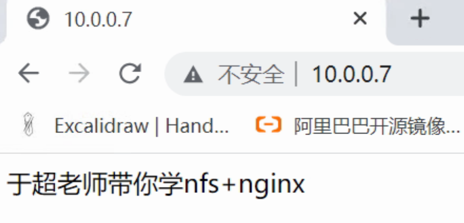
如果nfs服务端挂了会如何？
拿不到数据，页面卡死，需要需求nfs，或者依然是强制取消挂载
1.systemctl start nfs
2.[root@web-7 ~]#umount -lf /usr/share/nginx/html
重启nginx即可
总结NFS
1.NFS 存储优点
1.NFS 文件系统简单易用、方便部署、数据可靠、服务稳定、满足中小企业需求。
2.NFS 存储局限
1.存在单点故障, 如果构建高可用维护麻烦 web->nfs->backup
2.NFS 数据明文, 并不对数据做任何校验。
3.客户端挂载 NFS 服务没有密码验证, 安全性一般(内网使用)，除非借助第三方软件辅助认证功能。
3.NFS 应用建议
1.生产场景应将静态数据尽可能往前端推, 减少后端存储压力
2.必须将存储里的静态资源通过 CDN 缓存 jpg\png\mp4\avi\css\js
再多内容，以后慢慢学，还有如阿里云提供的NAS云存储，也是使用到了NFS功能
https://www.aliyun.com/product/nas